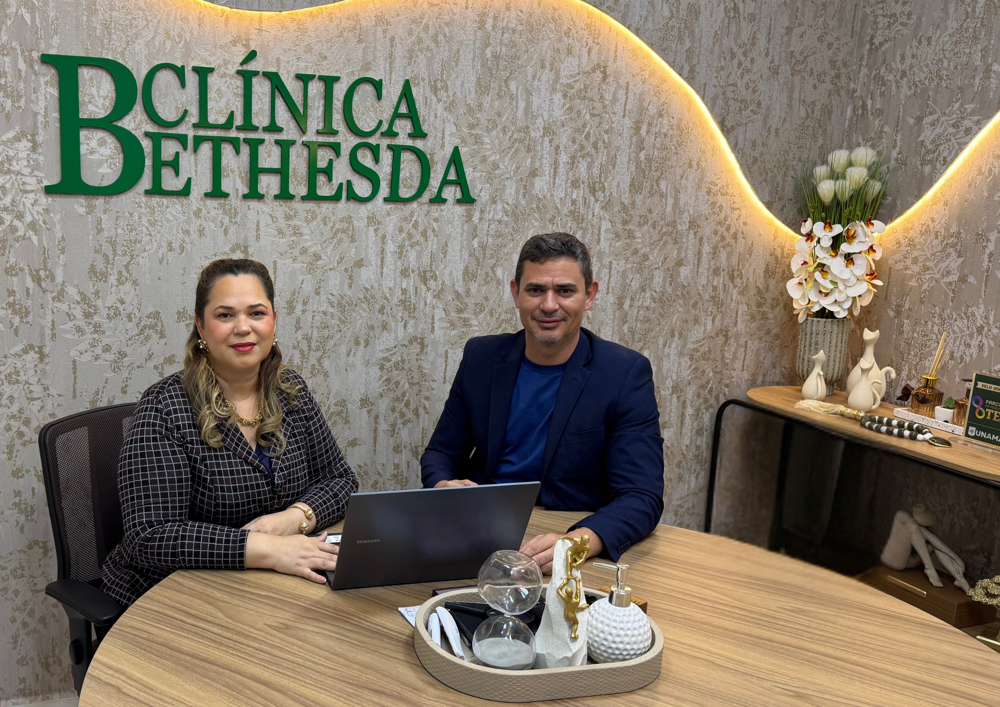

Rosely do Nascimento
CEO
Enfermeira especialista em feridas e fonoaudióloga.
Início / Sobre a Bethesda
Rede de saúde sediada em Macapá que une excelência técnica, inovação e cuidado humanizado. Bethesda significa “Casa de Misericórdia”.
Promover saúde, bem-estar e qualidade de vida por meio de um atendimento humanizado, ético e inovador, com o paciente no centro do cuidado.
Ser reconhecida como a principal referência em saúde integrada no estado do Amapá.
Humanização. Acolher cada pessoa com empatia, respeito e dedicação.
Inovação. Investir em tecnologia e melhoria contínua.
Excelência. Buscar os mais altos padrões de qualidade.

CEO
Enfermeira especialista em feridas e fonoaudióloga.
Diretor Administrativo